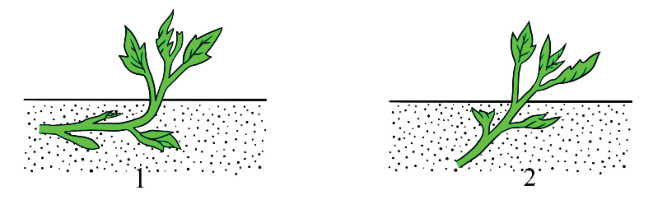
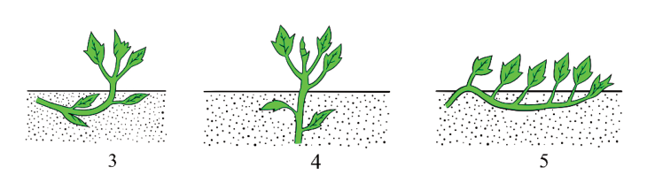

(i)
Choose a well-drained area with sandy loam or loamy soil;
(ii) Remove any vegetation, weeds, and debris from the site to ensure a clean
working area;
(iii) Plough the land to a depth of 20-25 cm to break up the soil and improve
aeration; then,
(iv) Form ridges approximately 20-25 cm high and 30-40 cm wide spaced
about 90-120 cm apart to allow for vine growth and ease of access.
Planting sweet potato
It is advisable to plant sweet potato vines in the morning/evening, although it can
be done in the afternoon, depending on the weather.
Procedure for planting sweet potatoes
(i)
Collect cuttings from healthy mother potato vines;
(ii) Insert cuttings into the soil to a depth of 7.5-10 cm and 30-40 cm spacing
between plants in a ridge (Figure 4.3);
(iii) Firm the soil around each cutting to ensure good contact; then,
(iv) Keep the soil moist but not waterlogged, especially during the first few
weeks after planting.


Figure 4.3: Different ways of planting sweet potato